Last updated: 2026-04-20
Checks: 4 2
Knit directory: near_monotone_smoothing/
This reproducible R Markdown analysis was created with workflowr (version 1.7.2). The Checks tab describes the reproducibility checks that were applied when the results were created. The Past versions tab lists the development history.
The global environment had objects present when the code in the R
Markdown file was run. These objects can affect the analysis in your R
Markdown file in unknown ways. For reproduciblity it’s best to always
run the code in an empty environment. Use wflow_publish or
wflow_build to ensure that the code is always run in an
empty environment.
The following objects were defined in the global environment when these results were created:
| Name | Class | Size |
|---|---|---|
| basis_samps | matrix;array | 1.1 Mb |
| beta_samps | numeric | 23.5 Kb |
| boundary_compute | function | 5.3 Kb |
| build_augmented_observation_matrix | function | 36.6 Kb |
| c | numeric | 56 bytes |
| compile_tmb_model | function | 29.6 Kb |
| Compute_Design | function | 47.4 Kb |
| Compute_Prec | function | 143.7 Kb |
| Compute_Prec_rev | function | 24.9 Kb |
| compute_tiwp_psd_boxcox | function | 5 Kb |
| d | numeric | 56 bytes |
| data_CD3518_sample_2 | tbl_df;tbl;data.frame | 448.2 Kb |
| data_sim | data.frame | 2.4 Kb |
| data_train | data.frame | 2.1 Kb |
| datSub | data.frame | 258 Kb |
| evaluate_global_interval_draws | function | 5.2 Kb |
| evaluate_regionwise_interval_draws | function | 15.2 Kb |
| evaluate_train_prediction_draws | function | 27.5 Kb |
| f | function | 5.5 Kb |
| f_lower | numeric | 10.9 Kb |
| f_mean | numeric | 10.9 Kb |
| f_samps | matrix;array | 31.8 Mb |
| f_upper | numeric | 10.9 Kb |
| fit_exact_known_sd_model | function | 55.9 Kb |
| fit_iwp_known_sd | function | 56.5 Kb |
| fit_mgp_fem_known_sd | function | 101 Kb |
| fit_mgp_known_sd | function | 76.4 Kb |
| fit_tiwp_known_sd | function | 71.5 Kb |
| haveData | integer | 26.1 Kb |
| IWP_joint_prec | function | 419.4 Kb |
| iwp_subset_mode | character | 112 bytes |
| iwp_summary | data.frame | 4.2 Kb |
| iwp2 | list | 771 Kb |
| k | numeric | 56 bytes |
| k_fem | numeric | 56 bytes |
| make_boxcox_transform | function | 77.1 Kb |
| make_boxcox_transform_derivative | function | 9.2 Kb |
| mGP | list | 772.6 Kb |
| mGP_FEM | list | 701 Kb |
| mGP_FEM_summary | data.frame | 4.2 Kb |
| mGP_joint_prec | function | 259.7 Kb |
| mGP_sim | function | 19 Kb |
| mGP_summary | data.frame | 4.2 Kb |
| mod_mgp | FitResult | 2.7 Mb |
| mspline_cov | function | 14.6 Kb |
| mspline_cov_c1 | function | 71 Kb |
| mspline_cov_c2 | function | 22.8 Kb |
| mspline_cov_c3 | function | 77.7 Kb |
| mspline_cov_c4 | function | 5.1 Kb |
| mspline_cov_c5 | function | 23.5 Kb |
| mspline_cov_c6 | function | 35.4 Kb |
| mspline_cross_cov | function | 14.6 Kb |
| mspline_cross_cov_c1 | function | 39.7 Kb |
| mspline_cross_cov_c2 | function | 14.9 Kb |
| mspline_cross_cov_c3 | function | 44.3 Kb |
| mspline_cross_cov_c4 | function | 4.3 Kb |
| mspline_cross_cov_c5 | function | 10.6 Kb |
| mspline_cross_cov_c6 | function | 26.6 Kb |
| mspline_deriv_cov | function | 14.6 Kb |
| mspline_deriv_cov_c1 | function | 8.9 Kb |
| mspline_deriv_cov_c2 | function | 6.2 Kb |
| mspline_deriv_cov_c3 | function | 14.4 Kb |
| mspline_deriv_cov_c4 | function | 1.8 Kb |
| mspline_deriv_cov_c5 | function | 3.2 Kb |
| mspline_deriv_cov_c6 | function | 12.2 Kb |
| n | numeric | 56 bytes |
| NperStrata | array | 114.4 Kb |
| obs_max | numeric | 56 bytes |
| old_wd | character | 168 bytes |
| p | numeric | 56 bytes |
| prior_conversion_mgp | function | 6 Kb |
| prior_median | numeric | 56 bytes |
| PSD_compute | function | 17.4 Kb |
| psd_iwp | numeric | 56 bytes |
| psd_mgp | numeric | 56 bytes |
| psd_tiwp2 | numeric | 56 bytes |
| PSD_tIWP2_compute | function | 2 Kb |
| R_trans_matrix | function | 61.8 Kb |
| R_trans_matrix_c1 | function | 106.8 Kb |
| R_trans_matrix_c2 | function | 8.9 Kb |
| R_trans_matrix_c3 | function | 15.6 Kb |
| R_trans_matrix_c4 | function | 9.6 Kb |
| RE_list | list | 13.9 Kb |
| resolve_curvature_parameter | function | 22.2 Kb |
| samp_max | numeric | 56 bytes |
| sample_exact_known_sd_fit | function | 33.6 Kb |
| sample_mgp_fem_known_sd_fit | function | 35.9 Kb |
| samples_iwp2 | dgeMatrix | 2.3 Mb |
| samples_mGP | dgeMatrix | 2.3 Mb |
| samples_mGP_FEM | dgeMatrix | 2.3 Mb |
| samples_tiwp2 | dgeMatrix | 2.3 Mb |
| sampling_from_FEM | function | 9.6 Kb |
| sd_noise | numeric | 56 bytes |
| sim_IWp_Var | function | 49.3 Kb |
| simulate_tiwp_boxcox | function | 7.2 Kb |
| Spm | numeric | 856 bytes |
| SS_cov | function | 110.5 Kb |
| SS_cov_c1 | function | 703.6 Kb |
| SS_cov_c2 | function | 37.6 Kb |
| SS_cov_c3 | function | 67 Kb |
| SS_cov_c4 | function | 10.4 Kb |
| SS_cov_c5 | function | 23 Kb |
| SS_cov_c6 | function | 58.1 Kb |
| SS_cov_mat | function | 110.5 Kb |
| SS_cov_mat_c1 | function | 44.2 Kb |
| SS_cov_mat_c2 | function | 5.9 Kb |
| SS_cov_mat_c3 | function | 7.3 Kb |
| SS_cov_mat_c4 | function | 5.9 Kb |
| SS_cov_mat_c5 | function | 5.9 Kb |
| SS_cov_mat_c6 | function | 5.9 Kb |
| SS_cross_cov | function | 14.6 Kb |
| SS_cross_cov_c1 | function | 253.1 Kb |
| SS_cross_cov_c2 | function | 18 Kb |
| SS_cross_cov_c3 | function | 36.8 Kb |
| SS_cross_cov_c4 | function | 6.3 Kb |
| SS_cross_cov_c5 | function | 13.1 Kb |
| SS_cross_cov_c6 | function | 47.5 Kb |
| SS_deriv_cov | function | 14.6 Kb |
| SS_deriv_cov_c1 | function | 36.5 Kb |
| SS_deriv_cov_c2 | function | 8.8 Kb |
| SS_deriv_cov_c3 | function | 10.6 Kb |
| SS_deriv_cov_c4 | function | 3.4 Kb |
| SS_deriv_cov_c5 | function | 3.3 Kb |
| SS_deriv_cov_c6 | function | 14.2 Kb |
| summarize_function_samples | function | 3.2 Kb |
| tiwp_summary | data.frame | 4.2 Kb |
| tiwp2 | list | 772.6 Kb |
| u | numeric | 56 bytes |
| x | numeric | 848 bytes |
| X | matrix;array | 11.1 Kb |
| y | numeric | 848 bytes |
The command set.seed(20240619) was run prior to running
the code in the R Markdown file. Setting a seed ensures that any results
that rely on randomness, e.g. subsampling or permutations, are
reproducible.
Great job! Recording the operating system, R version, and package versions is critical for reproducibility.
Nice! There were no cached chunks for this analysis, so you can be confident that you successfully produced the results during this run.
Great job! Using relative paths to the files within your workflowr project makes it easier to run your code on other machines.
Tracking code development and connecting the code version to the
results is critical for reproducibility. To start using Git, open the
Terminal and type git init in your project directory.
This project is not being versioned with Git. To obtain the full
reproducibility benefits of using workflowr, please see
?wflow_start.
There are two ways to parametrize a GP prior that penalizes the function \(f\) toward the monotone base model \(\text{span}\{1,m(x)\}\) where \(m(x)\) is a monotonically increasing function such that \(m'(x)>0\) for all \(x \in \Omega\).
The first way is to use the M-GP prior. Let \(\alpha(x) = \frac{m''(x)}{m'(x)}\) denotes the relative curvature function, then the M-GP prior is defined as \[ L_\alpha f(x) := D^2 f(x) - \alpha(x) D f(x) = \sigma\xi(x). \]
An alternative method is to use the transformed IWP2 prior (t-IWP2). The IWP-2 is defined as: \[ D^2 \tilde{f}(x^*) = \sigma\xi(x^*). \] So it has base model being \(\text{span}\{1, x^*\}\). By transforming the coordinate \(x^* = m(x)\), we can obtain the t-IWP2 prior as \(f(x) = \tilde{f}(m(x))\). The base model of t-IWP2 is therefore \(\text{span}\{1, m(x)\}\), which is the same as the M-GP prior.
To conceptually compare the two priors, we can consider the SDE characterization of the t-IWP2 prior.
\[\begin{equation} \begin{aligned} f'(x) &= \tilde{f}'(m(x)) m'(x).\\ f''(x) &= \tilde{f}''(m(x)) m'(x)^2 + \tilde{f}'(m(x)) m''(x) \\ &= \tilde{f}''\left(m(x)\right) m'(x)^2 + f'(x) \frac{m''(x)}{m'(x)} \\ &= \tilde{f}''\left(m(x)\right) m'(x)^2 + f'(x) \alpha(x). \end{aligned} \end{equation}\] Therefore we have: \[L_\alpha f(x) = \tilde{f}''\left(m(x)\right) m'(x)^2.\]
Note that \(\tilde{f}''\left(m(x)\right) m'(x)^2 = \tilde{f}''\left(m(x)\right) m'(x)^{1/2} m'(x)^{3/2}\), and that \(\tilde{f}''\left(m(x)\right) m'(x)^{1/2} = \sigma\xi(x)\) (Claim 1, proof attached later). We can then write the SDE of the t-IWP2 prior as: \[ L_\alpha f(x) = [\sigma m'(x)^{3/2}]\xi(x). \]
Equivalently, we can move the extra \(m'(x)^{3/2}\) to the left hand side and define a new operator \(L_\alpha^* = m'(x)^{-3/2} L_\alpha\) and then \(L_\alpha^*f(x) = \sigma\xi(x)\). It is then obvious that the t-IWP2 prior is (almost) equivalent to the M-GP prior, except the scaling factor \(\sigma m'(x)^{-3/2}\) on the differential operator. The effect of this scaling factor essentially changes the constant \(\sigma\) in the M-GP prior to a function of \(x\) in the t-IWP2 prior (i.e. \(\sigma(x) = [\sigma m'(x)^{3/2}]\)). This implies comparing to the M-GP prior, the t-IWP2 prior has a more flexible penalty strength that can vary with \(x\). When the function is changing fast (\(m'\) is large), the t-IWP2 prior has a small penalty and allows the function to deviate more from the base model than M-GP.
Without the loss of generality, let’s assume \(\sigma = 1\) and let \(x^* = m(x)\). To show \(\tilde{f}''\left(m(x)\right) m'(x)^{1/2} = \xi(x)\), we first notice that \(\tilde{f}''\left(m(x)\right) m'(x)^{1/2} = \xi(m(x)) m'(x)^{1/2}\) as \(\tilde{f}\) is an IWP2.
For any \(f_1, f_2 \in L^2\), we have: \[\begin{equation} \begin{aligned} \int \xi(m(x)) m'(x)^{1/2} f_1(x) dx &= \int \xi(x^* ) m'(m^{-1}(x^* ))^{-1/2} f_1(m^{-1}(x^* )) dx^* \end{aligned} \end{equation}\]
Therefore, using property of Gaussian white noise \(\xi(x^*)\), we have: \[\begin{equation} \begin{aligned} \text{Cov}\bigg[\int\xi(m(x)) m'(x)^{1/2} f_1(x)dx, \int \xi(m(x)) m'(x)^{1/2} f_2(x)dx \bigg] &= \text{Cov}\bigg[\int\xi(x^* ) m'(m^{-1}(x^* ))^{-1/2} f_1(m^{-1}(x^* ))dx^* , \int \xi(x^* ) m'(m^{-1}(x^* ))^{-1/2} f_2(m^{-1}(x^* ))dx^* \bigg] \\ &= \int m'(m^{-1}(x^* ))^{-1} f_1(m^{-1}(x^* )) f_2(m^{-1}(x^* )) dx^* \\ &= \int f_1(x) f_2(x) dx \\ &= \text{Cov}\bigg[\int\xi(x) f_1(x)dx, \int \xi(x) f_2(x)dx \bigg]. \end{aligned} \end{equation}\] The proof is hence complete.
library(tidyverse)
library(Matrix)
source("code/06-model-helpers.R")To compare the two priors, we can simulate samples from the two priors and compare the samples when \(m(x) = \sqrt x\).
For the M-GP prior:
B = 100
c <- 1.1
m <- function(x) {sqrt(x+c)}
m_deriv <- function(x) {1/(2*sqrt(x+c))}
samps0 <- mGP_sim(mesh_size = 0.1, max_t = 10, alpha = (2), c = c, initial_vec = c(m(0),m_deriv(0)), sd = 0.1)Registered S3 method overwritten by 'LaplacesDemon':
method from
print.laplace aghqresult0 <- samps0[,1:2]
for (i in 1:B) {
samps0 <- mGP_sim(mesh_size = 0.1, max_t = 10, alpha = (2), c = c, initial_vec = c(m(0),m_deriv(0)), sd = 0.1)
result0 <- cbind(result0, samps0[,2])
}
# result0[1:nrow(result0),-1] <- result0[1:nrow(result0),-1]/sd(result0[nrow(result0),-1])
matplot(x = result0[,1], y = result0[,-1], type = 'l', ylab = "Post Samp", xlab = "x", main = "alpha = 2", ylim = c(0,8), lty = "dashed", col = "pink")
lines(x = result0[,1], y = m(result0[,1]), col = "black", lty = "solid")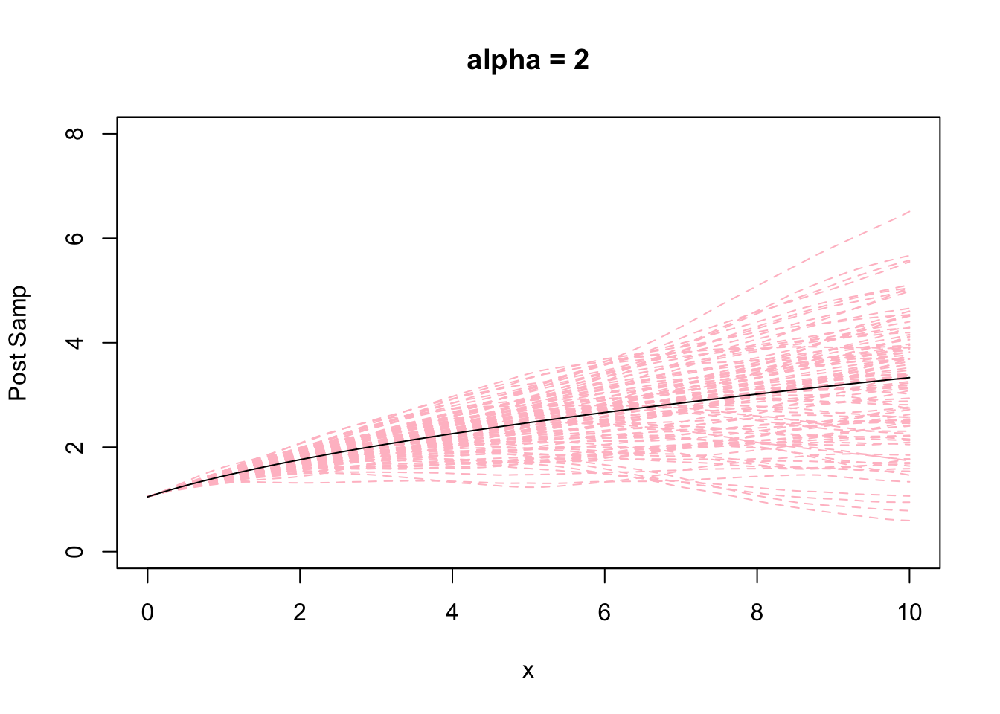
For the t-IWP2 prior:
# set the original grid
t <- seq(0, 10, by = 0.1)
# compute the transformed grid
t_trans <- m(t)
# sampling from tIWP2
samps1 <- sim_IWp_Var(t = t_trans, p = 2, sd = 0.1, initial_vec = c(m(0),1))
result1 <- cbind(c(t), samps1[,2])
for (i in 1:B) {
samps1 <- sim_IWp_Var(t = t_trans, p = 2, sd = 0.1, initial_vec = c(m(0),1))
result1 <- cbind(result1, samps1[,2])
}
# result1[1:nrow(result1),-1] <- result1[1:nrow(result1),-1]/sd(result1[nrow(result1),-1])
matplot(x = result1[,1], y = result1[,-1], type = 'l', ylab = "Post Samp", xlab = "x", main = "tIWP2", ylim = c(0,8), lty = "dashed", col = "pink")
lines(x = result1[,1], y = m(result1[,1]), col = "black", lty = "solid")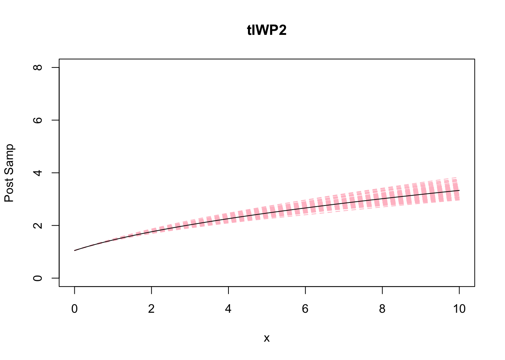
Compare the variance of the two priors:
## Variance of overtime:
var0 <- apply(result0[,-1], 1, var)
var1 <- apply(result1[,-1], 1, var)
plot(x = result0[,1], y = var0, type = 'l', ylab = "Variance", xlab = "x", main = "Variance of samples", ylim = c(0,5), lty = "dashed", col = "red")
lines(x = result1[,1], y = var1, col = "blue", lty = "solid")
legend("topright", legend=c("M-GP", "tIWP2"), col=c("red", "blue"), lty=1:1, cex=1)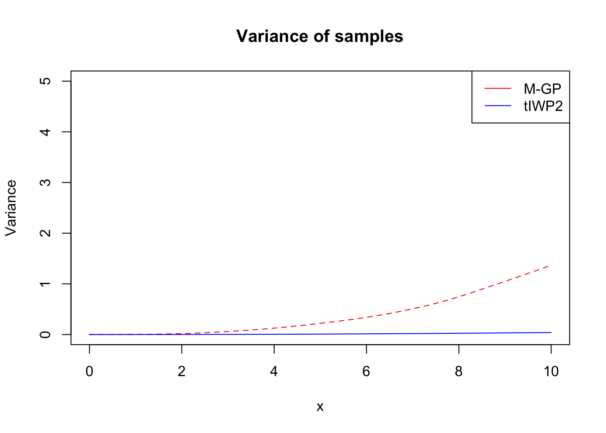
Let’s standardize by the variance at time 2 for each method:
var0 <- apply(result0[,-1], 1, var)/var(result0[which(result0[,1] == 2),-1])
var1 <- apply(result1[,-1], 1, var)/var(result1[which(result1[,1] == 2),-1])
plot(x = result0[,1], y = var0, type = 'l', ylab = "Variance", xlab = "x", main = "Variance of samples (standardized at time 2)", lty = "dashed", col = "red")
lines(x = result1[,1], y = var1, col = "blue", lty = "solid")
legend("topright", legend=c("M-GP", "tIWP2"), col=c("red", "blue"), lty=1:1, cex=1)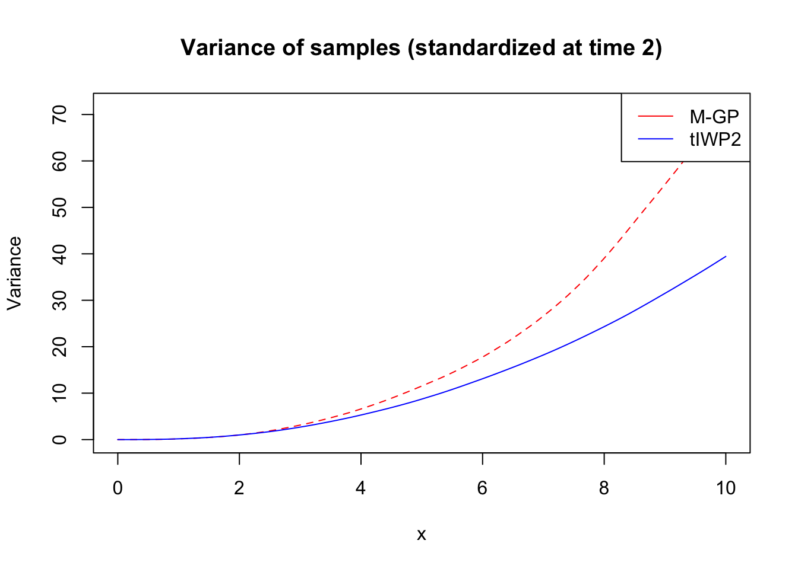
plot(x = result0[-1,1], y = var0[-1], type = 'l', ylab = "Variance", xlab = "x", main = "Variance of samples (standardized at time 2)", lty = "dashed", col = "red", log = "y")
lines(x = result1[-1,1], y = var1[-1], col = "blue", lty = "solid")
legend("bottomright", legend=c("M-GP", "tIWP2"), col=c("red", "blue"), lty=1:1, cex=1)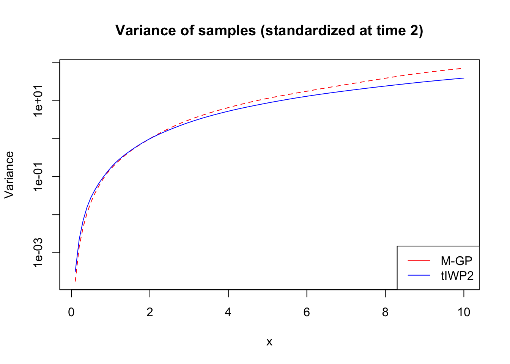
m <- function(x) {(x+c)^3}
m_deriv <- function(x) {3*(x+c)^2}
samps0 <- mGP_sim(mesh_size = 0.1, max_t = 10, alpha = (-1/2), c = c, initial_vec = c(m(0),m_deriv(0)), sd = 0.1)
result0 <- samps0[,1:2]
for (i in 1:B) {
samps0 <- mGP_sim(mesh_size = 0.1, max_t = 10, alpha = (-1/2), c = c, initial_vec = c(m(0),m_deriv(0)), sd = 0.1)
result0 <- cbind(result0, samps0[,2])
}
matplot(x = result0[,1], y = result0[,-1], type = 'l', ylab = "Post Samp", xlab = "x", main = "alpha = -1/2", lty = "dashed", col = "pink")
lines(x = result0[,1], y = m(result0[,1]), col = "black", lty = "solid")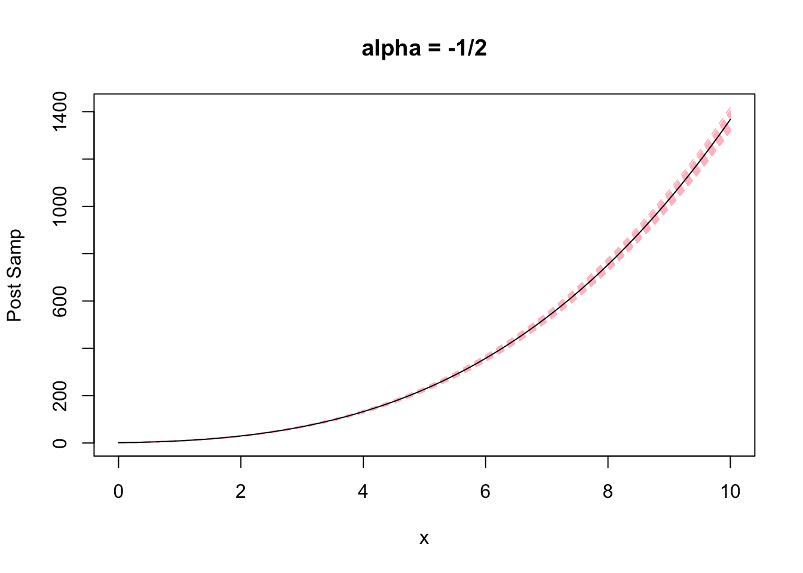
# set the original grid
t <- seq(0, 10, by = 0.1)
# compute the transformed grid
t_trans <- m(t)
# sampling from tIWP2
samps1 <- sim_IWp_Var(t = t_trans, p = 2, sd = 0.1, initial_vec = c(m(0),1))
result1 <- cbind(c(t), samps1[,2])
for (i in 1:B) {
samps1 <- sim_IWp_Var(t = t_trans, p = 2, sd = 0.1, initial_vec = c(m(0),1))
result1 <- cbind(result1, samps1[,2])
}
matplot(x = result1[,1], y = result1[,-1], type = 'l', ylab = "Post Samp", xlab = "x", main = "tIWP2", lty = "dashed", col = "pink")
lines(x = result1[,1], y = m(result1[,1]), col = "black", lty = "solid")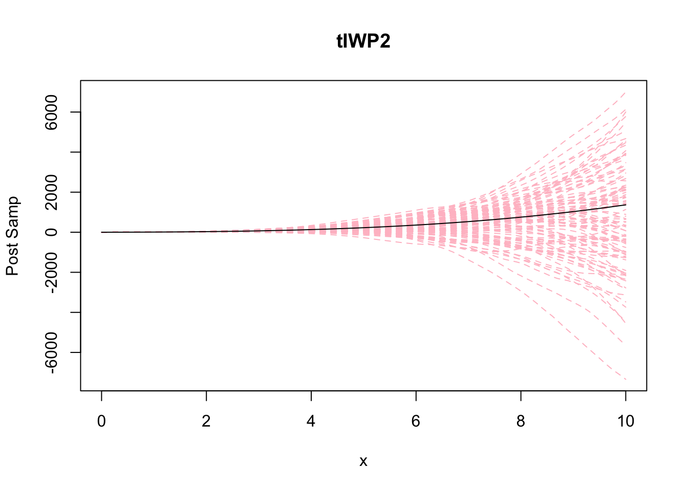
Compare the variance of the two priors:
## Variance of overtime:
var0 <- apply(result0[,-1], 1, var)
var1 <- apply(result1[,-1], 1, var)
plot(x = result0[,1], y = var0, type = 'l', ylab = "Variance", xlab = "x", main = "Variance of samples", ylim = c(0,1000), lty = "dashed", col = "red")
lines(x = result1[,1], y = var1, col = "blue", lty = "solid")
legend("topright", legend=c("M-GP", "tIWP2"), col=c("red", "blue"), lty=1:1, cex=1)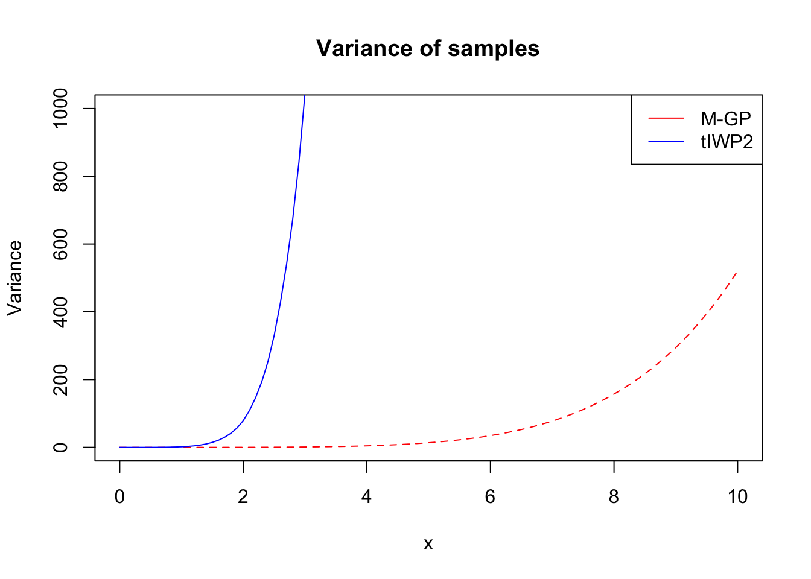
Let’s standardize by the variance at time 2 for each method:
var0 <- apply(result0[,-1], 1, var)/var(result0[which(result0[,1] == 2),-1])
var1 <- apply(result1[,-1], 1, var)/var(result1[which(result1[,1] == 2),-1])
plot(x = result0[,1], y = var0, type = 'l', ylab = "Variance", xlab = "x", main = "Variance of samples (standardized at time 2)", ylim = c(0,1000), lty = "dashed", col = "red")
lines(x = result1[,1], y = var1, col = "blue", lty = "solid")
legend("topright", legend=c("M-GP", "tIWP2"), col=c("red", "blue"), lty=1:1, cex=1)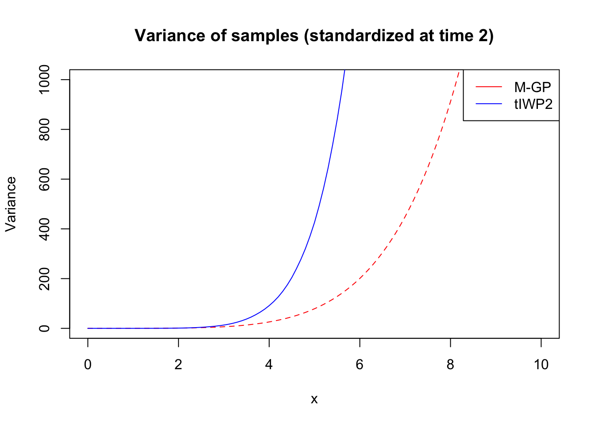
Here let’s consider what happens when we have information about the function \(f\) at \(x \neq 0\). Specifically, let’s assume we have a function \(f\) defines for \(t \in [0,11]\), where \(f(9)\) is known to be 0 and \(f'(9)\) is known to be 0.002.
To make the concept of M-GP clear, let’s assume \(f\) behaves like a square root function, so the base model is \(\text{span}\{1, \sqrt{x}\}\).
The default condition of M-GP is the initial condition at \(x = 0\), but here we have information on \(x = 9\). So let’s define \(\tilde{x} = x - c\) where \(c = 9\) for \(x \geq 9\). Similar for \(x \leq c\), we define \(\underset{\sim}{x} = c - x\).
Then, we define two independent M-GP priors for \(\underset{\sim}{x}\) and \(\tilde{x}\) respectively.
B <- 100
ref <- 9
sd = 0.0001
t <- seq(0.1, 11, by = 0.1)
x <- t - ref
m <- function(x) {sqrt(x+ref)}
m_deriv <- function(x) {1/(2*sqrt(x+ref))}
f_condition <- 0
f_deriv_condition <- 0.002
tilde_x <- sort(unique(ifelse(x >= 0, x, 0)))
x_tilde <- sort(unique(ifelse(x <= 0, -x, 0)))
samps_pos <- mGP_sim(t = tilde_x, alpha = (2), c = ref, initial_vec = c(f_condition, f_deriv_condition), sd = sd)
result_pos <- samps_pos[,1:2]
for (i in 1:B) {
samps_pos <- mGP_sim(t = tilde_x, alpha = (2), c = ref, initial_vec = c(f_condition, f_deriv_condition), sd = sd)
result_pos <- cbind(result_pos, samps_pos[,2])
}
samps_neg <- mGP_sim(t = x_tilde, alpha = (2), c = ref, initial_vec = c(f_condition, -f_deriv_condition), sd = sd)
# result_neg <- samps_neg[,1:2]
result_neg <- cbind(samps_neg[,1,drop = FALSE], samps_neg[,2,drop = FALSE])
for (i in 1:B) {
samps_neg <- mGP_sim(t = x_tilde, alpha = (2), c = ref, initial_vec = c(f_condition, -f_deriv_condition), sd = sd)
result_neg <- cbind(result_neg, samps_neg[,2])
}
# set the original grid
result_neg[,1] <- ref - result_neg[,1]
result_pos[,1] <- result_pos[,1] + ref
result <- rbind(result_neg[-1,], result_pos)
# sort the result
result <- result[order(result[,1]),]
# solve b1 b2 such that b1 + b2*sqrt(ref) = 0 and b2*1/(2*sqrt(ref)) = 0.002 when ref = 9
A <- matrix(c(1, sqrt(ref), 0, 1/(2*sqrt(ref))), nrow = 2, byrow = TRUE)
b <- solve(A) %*% c(f_condition, f_deriv_condition)
## the true m:
m_true <- function(x) b[1] + b[2]*sqrt(x)
matplot(x = result[,1], y = result[,-1], type = 'l', ylab = "Post Samp", xlab = "x", main = "alpha = 2", lty = "dashed", col = "pink", ylim = c(-0.05, 0.05))
lines(x = result[,1], y = m_true(result[,1]), col = "black", lty = "solid")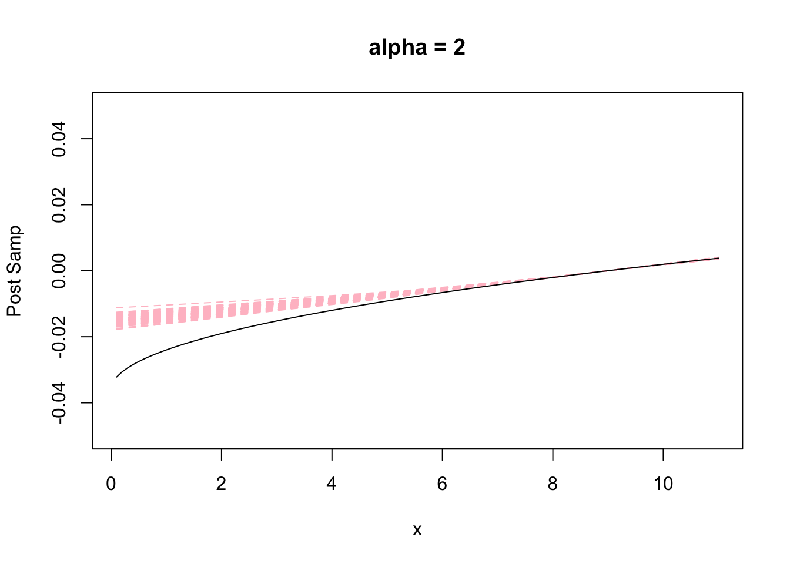
The result does not look right…
Because \(\sqrt{1-x} \neq b_1 + b_2\sqrt{x}\) for some \(b_1, b_2\). In other words, if \(f(x)\) is a M-GP, \(f(-x)\) is not a M-GP generated by the same \(\alpha(x)\). For example, when \(f(x) = \sqrt{x}\) and \(\tilde{x} = x - c\), we can define \(f_1(\tilde{x}) = \sqrt{\tilde{x} +c} = \sqrt{(x-c)+ c} = \sqrt{x} = f(x)\). But if we define \(\underset{\sim}{x} = c-x\), then \(f_2(\underset{\sim}{x}) = \sqrt{c-\underset{\sim}{x}} = \sqrt{c-c+x} = f(x)\). The form of \(\sqrt{c-\underset{\sim}{x}}\) can not be written as the base model of any M-GP!
We need to find which model \(\sqrt{c-\underset{\sim}{x}}\) should correspond to…
Given a choice of \(\alpha_c(x) = -1/a(x+c)\), let’s define a new function \(\alpha^*_{c}(x) := [-1/a(x-c)] = 1/a(c-x) = -\alpha_c(-x)\) and a new operator \(\tilde{L}^{*}_\alpha\) such that \(\tilde{L}^{*}_\alpha = D^2 - \alpha^*_{c}(x)D\).
We call the process generated by this operator the reverse M-GP.
source("code/04-state-space-adjoint.R")
source("code/05-sampling-adjoint.R")B <- 100
ref <- 9
sd <- 0.0001
x <- seq(0.1, 11, by = 0.1)
x <- t - ref
m <- function(x) {sqrt(x+ref)}
m_deriv <- function(x) {1/(2*sqrt(x+ref))}
f_condition <- 0
f_deriv_condition <- 0.002
tilde_x <- sort(unique(ifelse(x >= 0, x, 0)))
x_tilde <- sort(unique(ifelse(x <= 0, -x, 0)))
samps_pos <- mGP_sim(t = tilde_x, alpha = (2), c = (ref), initial_vec = c(f_condition, f_deriv_condition), sd = sd)
result_pos <- samps_pos[,1:2]
for (i in 1:B) {
samps_pos <- mGP_sim(t = tilde_x, alpha = (2), c = (ref), initial_vec = c(f_condition, f_deriv_condition), sd = sd)
result_pos <- cbind(result_pos, samps_pos[,2])
}
samps_neg <- adj_mGP_sim(t = x_tilde, alpha = (2), c = (ref), initial_vec = c(f_condition, -f_deriv_condition), sd = sd)
result_neg <- samps_neg[,1:2]
for (i in 1:B) {
samps_neg <- adj_mGP_sim(t = x_tilde, alpha = (2), c = (ref), initial_vec = c(f_condition, -f_deriv_condition), sd = sd)
result_neg <- cbind(result_neg, samps_neg[,2])
}
# set the original grid
result_neg[,1] <- -result_neg[,1]
result_pos[,1] <- result_pos[,1]
result <- rbind(result_neg[-1,], result_pos)
# sort the result
result <- result[order(result[,1]),]
result[,1] <- result[,1] + ref
# solve b1 b2 such that b1 + b2*sqrt(x) = 0 and b2*1/(2*sqrt(x)) = 0.002 when x = ref
A <- matrix(c(1, sqrt(ref), 0, 1/(2*sqrt(ref))), nrow = 2, byrow = TRUE)
b <- solve(A) %*% c(f_condition, f_deriv_condition)
## the true m:
m_true <- function(x) b[1] + b[2]*sqrt(x)
matplot(x = result[,1], y = result[,-1], type = 'l', ylab = "Post Samp", xlab = "x", main = "alpha = 2", lty = "dashed", col = "pink", ylim = c(-0.05, 0.05))
lines(x = result[,1], y = m_true(result[,1]), col = "black", lty = "solid")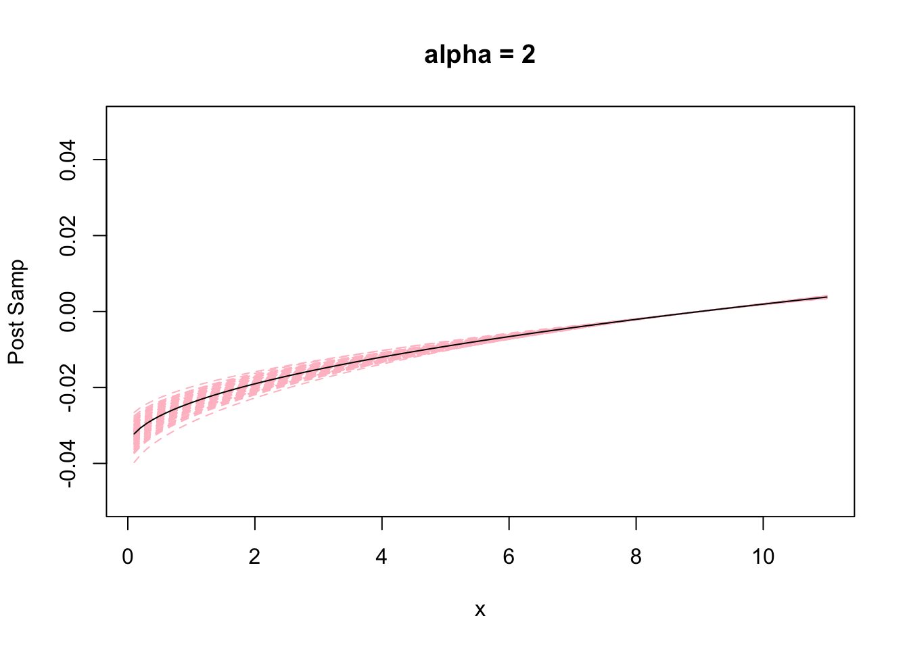
Now, the result looks correct!
Now, how should we use t-IWP2 in the same case?
This becomes an easier problem, as the reverse process of IWP2 is still an IWP2 with an opposite derivative (i.e. \(f(x) \sim \text{IWP}\) implies \(f(-x) \sim \text{IWP}\)).
This implies that we just need to merge the forward IWP and the backward IWP together, while being careful with the initial condition (\(f'(c) = \tilde{f}'(m(c))m'(c)\), so \(\tilde{f}'(m(c)) = f'(c)/m'(c)\)).
B <- 100
c <- 9
sd = 0.001
m <- function(x){sqrt(x)}
m_deriv <- function(x){1/(2*sqrt(x))}
x <- seq(0.1, 11, by = 0.1)
x_trans <- m(x)
x_trans_part1 <- x_trans[x_trans <= m(c)]
x_trans_part2 <- x_trans[x_trans >= m(c)]
x_trans_part1_relative <- rev(m(c) - x_trans_part1)
# take rev(..) to make the sequence increasing.
x_trans_part2_relative <- x_trans_part2 - m(c)
# this is an increasing sequence, no need to reverse it.
samps1_part1 <- sim_IWp_Var(t = x_trans_part1_relative, p = 2, sd = sd,
initial_vec = c(f_condition,-f_deriv_condition/m_deriv(c)))
result1_part1 <- cbind(c(x[x_trans <= m(c)]), samps1_part1[,2])
for (i in 1:B) {
samps1_part1 <- sim_IWp_Var(t = x_trans_part1_relative, p = 2, sd = sd,
initial_vec = c(f_condition,-f_deriv_condition/m_deriv(c)))
result1_part1 <- cbind(result1_part1, samps1_part1[,2])
}
result1_part1[,1] <- (m(c) - rev(x_trans_part1_relative))^2
# reverse the order again since the order in the samples is reversed as well.
result1_part1[,1] <- rev(result1_part1[,1])
samps1_part2 <- sim_IWp_Var(t = x_trans_part2_relative, p = 2, sd = sd,
initial_vec = c(f_condition, f_deriv_condition/m_deriv(c)))
result1_part2 <- cbind(c(x[x_trans >= m(c)]), samps1_part2[,2])
for (i in 1:B) {
samps1_part2 <- sim_IWp_Var(t = x_trans_part2_relative, p = 2, sd = sd,
initial_vec = c(f_condition, f_deriv_condition/m_deriv(c)))
result1_part2 <- cbind(result1_part2, samps1_part2[,2])
}
result1_part2[,1] <- (x_trans_part2_relative + m(c))^2Merge the two t-IWP2 together, we get the final result!
result <- rbind(result1_part1[-1,], result1_part2)
# sort the result
result <- result[order(result[,1]),]
matplot(x = result[,1], y = result[,-1], type = 'l', ylab = "Post Samp", xlab = "x", main = "alpha = 2", lty = "dashed", col = "pink", ylim = c(-0.05, 0.05))
lines(x = result[,1], y = m_true(result[,1]), col = "black", lty = "solid")So when we want to condition at some value \(x \neq 0\), which method is easier to use?
Overall, the t-IWP2 is easier, as it does not require the computation of the reverse process. The only additional step required would be to split the domain and fit two independent IWP2 processes.
To use the M-GP, we need to compute the reverse M-GP process. The
functions in code/04-state-space-adjoint.R and
code/05-sampling-adjoint.R are designed to compute the
reverse process of M-GP for a range of \(a\) values. However, the computation of the
reverse M-GP process changes with the choice of \(a\) in complicated way, and there are still
cases of \(a\) that are not covered by
the current implementation. Generally speaking, the computation of
reverse M-GP process for arbitrary \(a\) should be done with manual computation
for each \(a\), which is not hard, but
a bit tedious.
sessionInfo()R version 4.5.1 (2025-06-13)
Platform: aarch64-apple-darwin20
Running under: macOS Sequoia 15.6.1
Matrix products: default
BLAS: /Library/Frameworks/R.framework/Versions/4.5-arm64/Resources/lib/libRblas.0.dylib
LAPACK: /Library/Frameworks/R.framework/Versions/4.5-arm64/Resources/lib/libRlapack.dylib; LAPACK version 3.12.1
locale:
[1] en_US.UTF-8/en_US.UTF-8/en_US.UTF-8/C/en_US.UTF-8/en_US.UTF-8
time zone: America/Chicago
tzcode source: internal
attached base packages:
[1] stats graphics grDevices utils datasets methods base
other attached packages:
[1] BayesGP_0.1.3 knitr_1.50 Matrix_1.7-4 lubridate_1.9.4
[5] forcats_1.0.1 stringr_1.6.0 dplyr_1.1.4 purrr_1.2.0
[9] readr_2.1.6 tidyr_1.3.1 tibble_3.3.0 ggplot2_4.0.1
[13] tidyverse_2.0.0
loaded via a namespace (and not attached):
[1] gtable_0.3.6 TMB_1.9.19 xfun_0.55
[4] bslib_0.9.0 ks_1.15.1 lattice_0.22-7
[7] numDeriv_2016.8-1.1 tzdb_0.5.0 bitops_1.0-9
[10] vctrs_0.6.5 tools_4.5.1 generics_0.1.4
[13] parallel_4.5.1 aghq_0.4.1 cluster_2.1.8.1
[16] pkgconfig_2.0.3 fds_1.8 KernSmooth_2.23-26
[19] data.table_1.17.8 RColorBrewer_1.1-3 S7_0.2.1
[22] lifecycle_1.0.4 compiler_4.5.1 farver_2.1.2
[25] git2r_0.36.2 statmod_1.5.1 mvQuad_1.0-8
[28] httpuv_1.6.16 htmltools_0.5.9 rainbow_3.8
[31] sass_0.4.10 RCurl_1.98-1.17 yaml_2.3.12
[34] pracma_2.4.6 later_1.4.4 pillar_1.11.1
[37] jquerylib_0.1.4 MASS_7.3-65 cachem_1.1.0
[40] mclust_6.1.2 tidyselect_1.2.1 digest_0.6.39
[43] mvtnorm_1.3-3 stringi_1.8.7 LaplacesDemon_16.1.6
[46] splines_4.5.1 pcaPP_2.0-5 rprojroot_2.1.1
[49] fastmap_1.2.0 grid_4.5.1 colorspace_2.1-2
[52] cli_3.6.5 magrittr_2.0.4 dichromat_2.0-0.1
[55] withr_3.0.2 scales_1.4.0 promises_1.5.0
[58] timechange_0.3.0 rmarkdown_2.30 otel_0.2.0
[61] deSolve_1.40 workflowr_1.7.2 hms_1.1.4
[64] evaluate_1.0.5 rlang_1.1.6 Rcpp_1.1.0
[67] glue_1.8.0 fda_6.3.0 hdrcde_3.4
[70] jsonlite_2.0.0 R6_2.6.1 fs_1.6.6